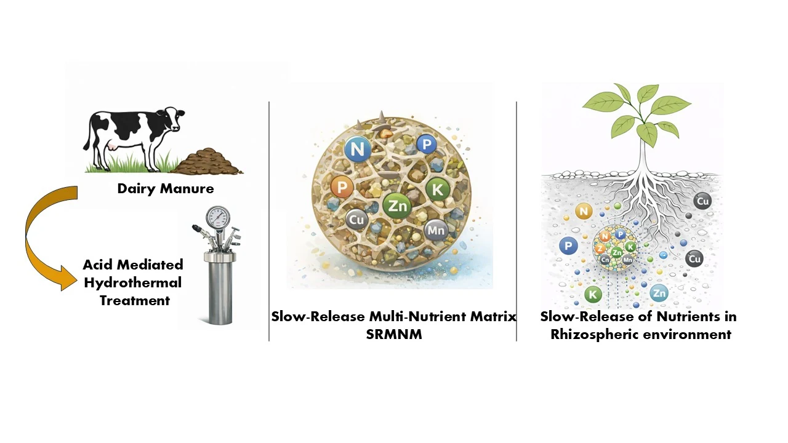

Published research
From dairy manure to a recoverable multi-nutrient product
The process combines controlled acidification, mild hydrothermal treatment, solid-liquid separation, alkaline precipitation, and product characterization. Release tests compare immediate water solubility with acidic root-zone-like conditions to evaluate nutrient availability.
87.6–91.5%Manure P mobilized to aqueous phase
87.7–91.7%Dissolved P recovered by precipitation
4.36–4.79 wt%P in recovered SRMNM